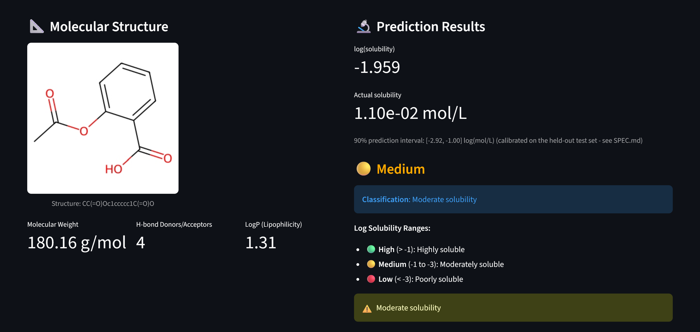
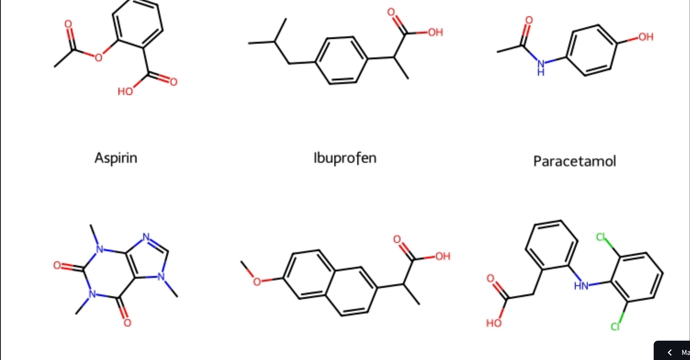

💊 Drug Solubility Predictor
An XGBoost pipeline that predicts the aqueous solubility of a drug molecule from its SMILES string, with a prediction interval, an applicability-domain check, a Streamlit app and a FastAPI service.
GitHub Repository · Specification · Live demo (Streamlit)

Why this project
A compound that does not dissolve in water is hard to turn into a drug, so solubility is checked early. Measuring it for every candidate is slow, and a model that gives only a number is risky: a user cannot tell when the number is a guess. This project predicts log solubility and says how far to trust the answer. The first version, a fingerprint-only Random Forest, reached R² 0.70. I rebuilt it from a written specification with leakage rules, then tested it on a second dataset.
Results at a glance
ESOL, 1,144 compounds, random 80/20 split (915 training and 229 test molecules). Features: a 2,048-bit Morgan fingerprint and 7 RDKit descriptors; 1,028 of the 2,055 features are kept by feature selection.
| Test R² | RMSE | MAE | |
|---|---|---|---|
| Fingerprint-only Random Forest (baseline) | 0.6985 | 1.146 | 0.860 |
| XGBoost with descriptors (current) | 0.9116 | 0.620 | 0.482 |
| AqSolDB, 8,881 compounds never seen in training | 0.638 | 1.443 | 0.988 |
RMSE and MAE are in log(mol/L). Four models were compared with 5-fold cross-validation on the training set only (SVR 0.732, Random Forest 0.852, Gradient Boosting 0.887, XGBoost 0.893), and the 229-row test set was scored once.

What the evaluation showed
- Descriptors, not a bigger model, made the difference. MolLogP alone carries 17.5% of the feature importance, more than the next five fingerprint bits together, which agrees with the role of LogP in solubility theory. The train/test gap fell from 0.24 to 0.06, so the gain is generalisation and not only a better fit.
- The external score is much lower, and it is reported next to the 0.91. On AqSolDB R² drops to 0.64. The test score measures how well the model works close to ESOL, not how well it works on drugs in general.
- Every prediction carries a warning signal. A 90% interval of about ±0.96 log units, and a flag when the nearest training molecule has a Tanimoto similarity below 0.40. The flag was motivated by the external result.
Methodology
- Specification first.
SPEC.mdfixes the feature set and the leakage rules before the code. - No leakage into the test set. Scaling and feature selection are steps of one scikit-learn pipeline fitted on the training data only; nothing from the test set or from AqSolDB reaches them.
- External data cleaned of overlap. 1,099 AqSolDB compounds that also appear in ESOL (found by canonical SMILES) were removed before scoring.
- Interval: split conformal prediction, a 90th percentile of absolute residuals.
- Two front ends, one implementation: the Streamlit app and the FastAPI service (
POST /predict,GET /health, Pydantic validation, Dockerfile) load the same trained pipeline and call the same prediction function.
Testing
Automated tests run on every push and pull request (pytest in GitHub Actions).
What is verified
- Features and prediction logic: feature construction and the solubility classification.
- A leakage guardrail is part of the suite.
- Uncertainty: the prediction interval and the applicability-domain check.
- API: the FastAPI service.
Not covered
- The accuracy of the model: tests check the code, not that R² stays at 0.91.
- The Docker image and the Streamlit interface are not covered by the test suite.
- Predictions for molecule classes outside ESOL, apart from the AqSolDB evaluation above.
Limitations
- The interval is not a textbook conformal guarantee. It is calibrated on the same 229 test rows that give the headline R², so the reported coverage is optimistic. A separate calibration set would fix it, but ESOL is too small to give up more data.
- The accuracy depends on distance from ESOL. R² 0.91 inside, 0.64 outside; which compound classes cause the drop was not analysed.
- It is a random split of a small dataset: the 0.91 comes from 229 test molecules, and its own uncertainty was not quantified.
- The API is documented and containerised but not deployed anywhere public.
Tech stack: Python, RDKit, scikit-learn, XGBoost, pandas, FastAPI, Pydantic, Docker, Streamlit, pytest, GitHub Actions.
Related: the logP Predictor is a neural-network model for a neighbouring property, and the Buchwald-Hartwig C-N Coupling Optimizer uses the same toolkit for reaction yield.